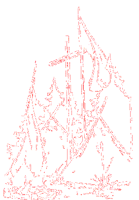

Das Zeltlagerteam ist seit jeher bestrebt, den Teilnehmerbeitrag so gering wie möglich und für jederman erschwinglich zu halten. Durch die Kostenexplosion der Vergangenheit ist dieses so nicht mehr möglich.
Diese Lücke wollen wir mit unserem Verein abdecken und SIE können uns dabei unterstützen!
Egal, ob sie aktives oder förderndes Mitglied unseres Vereins werden, jede Hilfe ist uns willkommen.
Bei Interesse melden Sie sich bitte bei
Thorsten Mitzlaff
Lübecker Straße 95
23843 Bad Oldesloe
Torben Reetz
Hedwig-Kettler-Straße 19
23843 Bad Oldesloe
oder Tel.: 04531 / 89 28 120
oder eMail: freunde@zela-od.de

Hier geht's zum Zeltlager
Bankverbindung:
Volksbank Stormarn eG
IBAN DE24 2019 0109 0041 3239 40
Impressum und Datenschutzerklärung
Und hier ein Überblick über unsere bisherigen Unterstützungen für das Zeltlager: